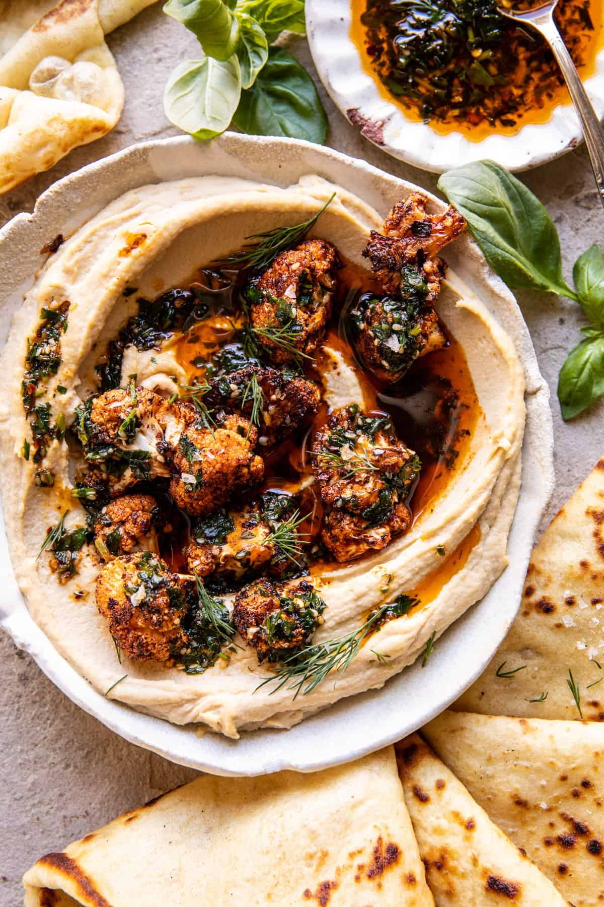

Crispy Roasted Cauliflower Hummus

Desciption
Stepping up our hummus game with this Crispy Roasted Cauliflower Hummus.
Store-bought hummus (the easy shortcut no one needs to know about) topped
with chili seasoned roasted cauliflower and spicy garlic herb oil. It's
the simplest to throw together, but looks super fancy and tastes even
better. Serve with fresh naan or pita chips and everyone will devour this
hummus.
Ingredients
- 1 head cauliflower, cut into florets
- 2 tablespoons extra virgin olive oil
- 2 teaspoons smoked paprika
- 1 teaspoon chili powder
- 1 teaspoon garlic powder
- koser salt and black pepper
- 2 cups plain hummus
CHILI HERB OIL
- 1/3 cup extra virgin olive oil
- 1/2 cup chopped fresh herbs... cilantro, dill, parsley
- 1 clove garlic, grated
- 1/2-1 teaspoon paprika
- 1/2-1 teaspoon chili flakes
- 2 tablespoons sesame seeds
- 2 teaspoons lemon zest
- 1 teaspoon honey
Steps
- Preheat oven to 425° F. On a baking sheet, combine the cauliflower, olive oil, paprika, chili powder, garlic powder, and a pinch each of salt and pepper. Toss well to evenly coat. Transfer to the oven and roast for 20 minutes, or until tender. Toss and roast another 10 minutes, until charred.
- Meanwhile, make the oil. Combine the herbs, garlic, paprika, chili flakes, sesame seeds, lemon zest, and honey in a heat-proof bowl. Heat the oil in a skillet over medium heat until it sizzles, 5 minutes. Pour the oil over the spices, stir to combine.
- Spread the hummus in a shallow bowl. Add the cauliflower, then spoon over the oil. Serve with pita or chips.